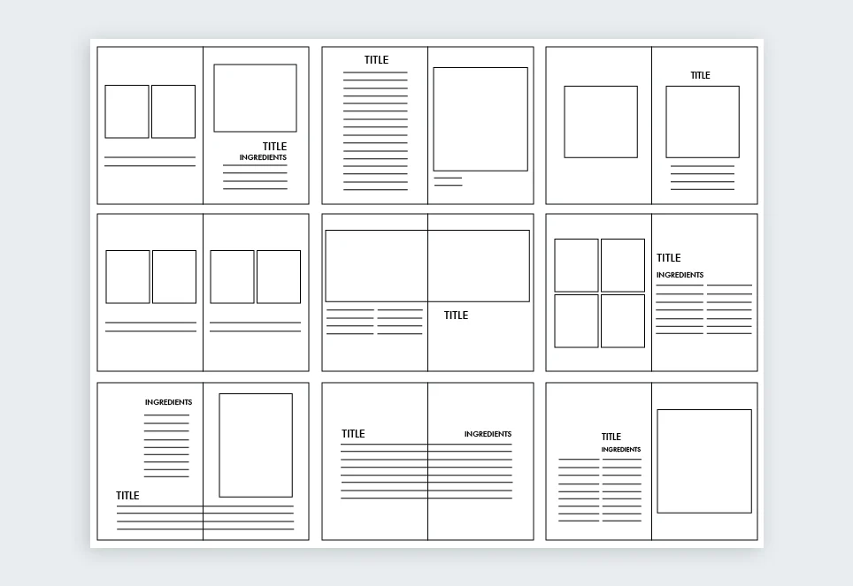

Introduction
UI (User Interface) and UX (User Experience) design play a crucial role in how users interact with a website or application. A good design not only looks beautiful but also provides a smooth and enjoyable experience.
What is UI vs UX?
UI focuses on the visual elements like buttons, colors, typography, and layout. UX focuses on how users feel while interacting with your product and how easy it is to use.
- UI: Visual design and appearance
- UX: User journey and experience

Key UI/UX Principles
1. Simplicity
Keep your design clean and simple. Avoid unnecessary elements that can confuse users.
2. Consistency
Use consistent colors, fonts, and layouts throughout your website to create a unified experience.
3. Accessibility
Design for everyone, including users with disabilities. Use readable fonts, good contrast, and proper structure.
4. Visual Hierarchy
Guide users’ attention by using size, color, and spacing to highlight important elements.

Why UI/UX Matters
A well-designed interface improves user satisfaction, increases engagement, and helps achieve business goals. Poor design can lead to frustration and loss of users.
My Learning Experience
While working on projects, I learned how important UI/UX is in real-world applications. I focused on creating clean layouts, improving usability, and ensuring a smooth user journey.
"Design is not just what it looks like — it's how it works."
Conclusion
Mastering UI/UX principles takes practice and observation. By focusing on users and continuously improving your designs, you can create experiences that are both beautiful and effective.
← Back to Blogs